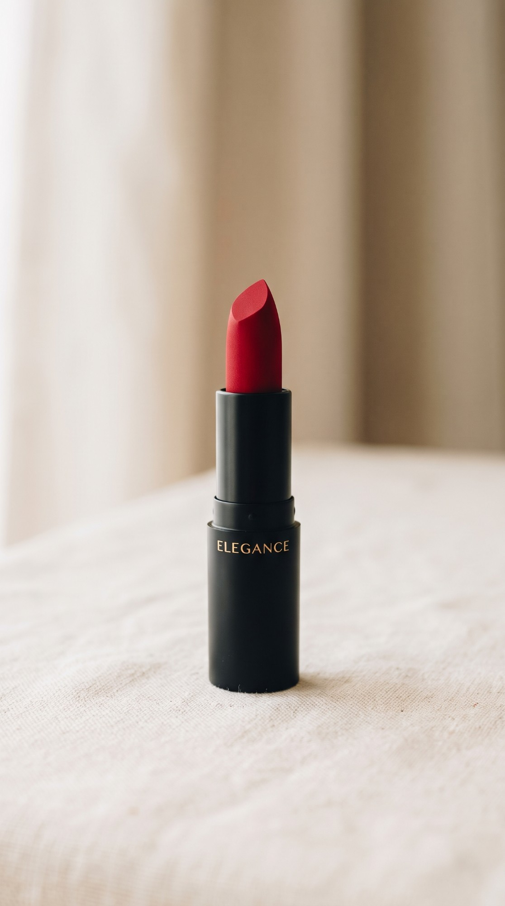
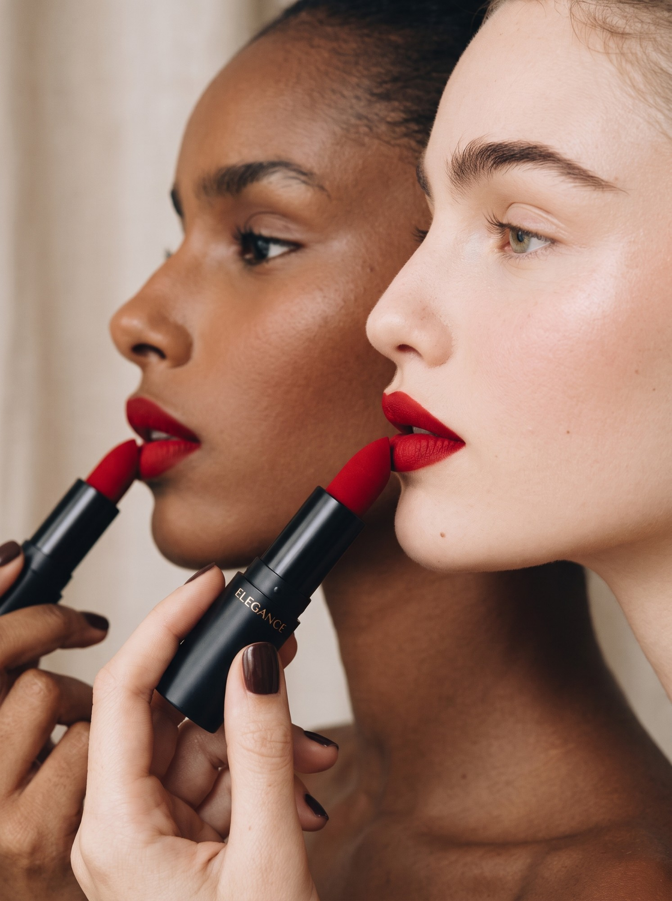

пример: продукт отдельно

пример: продукт в сцене

продукт в кадре
Nano Banana
Для переноса настоящего продукта в готовую сцену тоже подходит Nano Banana: по фото упаковки он сохраняет форму и цвет.
Мелкий текст и логотипы он иногда перерисовывает — на упаковке это видно первым делом.
Сверяйте этикетку с оригиналом: если буквы поплыли, дорисовывайте текст в редакторе.